実際に仕事で困らないためのWord講座
現役講師が教える、就職・転職後に差が出る「文書作成」の正しい手順
Microsoft Word（ワード）は、事務職において毎日のように使われる「文書作成の標準ソフト」です。案内文・報告書・社内資料・送付状など、ビジネスの現場で交わされるほとんどの書類はWordで作られています。
「文字が入力できれば大丈夫」と思われがちですが、実際の仕事では、単に文字を並べるだけでなく、レイアウトの調整、見やすい表の作成、適切な画像の配置など、基本操作を正しく理解していることが強く求められます。
このページでは、パソコン教室や講習で多くの初心者を指導してきた経験から、「就職後に困らないために覚えておきたいこと」に焦点を当てて、Wordの基本を順番に、その「理由」とともに解説します。
機能の名前だけを暗記しても、実務で少しレイアウトが崩れただけでパニックになってしまいます。大切なのは「なぜその設定をするのか」という理由を知ることです。この講座では、私の実際の授業と同じように、実務での使いどころをセットでお伝えしていきます。
Word画面の名称と役割を知る
操作を覚える前に、まずはWordの「画面の各部の名前」を一致させましょう。職場での指示やマニュアルでもこれらの用語が使われるため、共通言語として覚えておく必要があります。
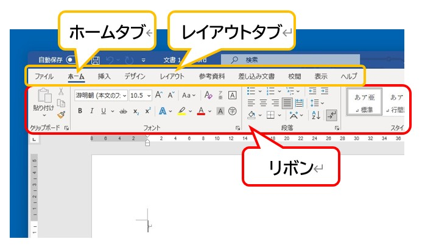
▲ 画面上部の「リボン」の中に、すべての機能が詰まっています
- リボン： 画面上部の大きなメニューエリアです。ここにすべての機能が集まっています。
- タブ： 「ホーム」「挿入」「レイアウト」などの切り替えボタンです。目的ごとにリボンの内容を入れ替えます。
- クイックアクセスツールバー： 画面最上部（左端）にある小さなボタン群です。よく使う「保存」などを自分好みに配置できます。
- ステータスバー： 画面の一番下。現在のページ数や文字数が表示されており、入力の進捗を確認するのに便利です。
Wordは文字を打つ前の準備が大切
初心者の方によく見られますが、多くの方はまず文字を最後まで入力してから、用紙サイズや余白を変更しようとします。しかし実務では、これは避けるべき手順です。
入力前に環境を整えることで、1行に入る文字数や改行位置が確定し、後のレイアウト崩れを防ぐことができます。仕事では、最初から「このサイズで作成してください」という指示（様式）があることが多いため、まずは設定から始めましょう。
| 設定項目 | 実務での「理由」と選び方 |
|---|---|
| 用紙 サイズ |
原則として「A4」を選びます。 日本のビジネス環境では、書類を保管する棚、バインダー、そして郵送用の封筒にいたるまで、すべてA4を基準に設計されているからです。ただし、掲示物ならA3、案内状ならB5やハガキサイズなど、用途に合わせて変更します。 |
| 用紙 の向き |
通常は「縦」で使用しますが、図表や横に長い一覧表、フローチャートをメインにする場合などは「横」を選択します。横向きにすることで、1行に収まる情報量を増やし、視認性を高めることができます。 |
| 余白 設定 |
「標準」が基本ですが、社内の規定や様式がある場合は勝手に変えないよう注意しましょう。 印刷後にパンチで穴を開けて綴じるための「綴じしろ」を考慮した数値になっている場合があるからです。 |
Wordを開いたら、まずは [レイアウト] タブをクリックする。これが「デキる事務スタッフ」の共通したルーティンです。この数秒の準備が、後の大幅な修正作業からあなたを救うことになります。
選択してから操作するという基本手順
Wordで文字の見た目を変えたり、場所を移動させたりする際に、最も大切で基本的な習慣が「範囲選択をしてから、命令（ボタンを押すなど）を出す」という順序です。「ここをこう変えたい」という意思をWordに伝えてから操作を始めるルーティンを徹底しましょう。
マウス操作だけでなく、キーボードを併用した選択法を覚えることで、正確で疲れにくい操作が可能になります。状況に合わせて、最も手間の少ない方法を選べるようになりましょう。
- 単語を選択： 目的の言葉の上でダブルクリックします。
- 1行を選択： 行の左端（余白部分）で、マウスポインターが「白い右向きの矢印」に変わった時に1回クリックします。
- 段落を選択： 行の左端をダブルクリック、または本文中の段落内で素早くトリプルクリックします。
- 文書全体を選択： キーボードの Ctrl を押しながら A を押します。フォントを一括で変えたい時に重宝します。
- 1文字単位の微調整： Shift を押しながら矢印キー（← →）を押します。マウスでは難しい「あと1文字だけ」という精密な選択に向いています。
文字の配置を整えて見やすくする
入力した文字を左・中央・右のどこに置くかは、[ホーム] タブの「段落」グループにあるボタンで設定します。ビジネス文書には、それぞれの配置に明確な役割があります。
- 中央揃え： 文書の「タイトル」に使用します。視線を中央に集め、何についての書類かを一瞬で伝えます。
- 右揃え： 「作成日」や「差出人名」に使用します。これらを右に寄せることで、本文との区別がつき、読み手の視線がスムーズに本文へと誘導されます。
- 左揃え： 通常の本文に使用します。
- 両端揃え： 日本語の文章において、行の右端がガタガタにならないようWordが文字間隔を微調整してくれる機能です。ビジネス文書の本文にはこの設定を強くお勧めします。書類全体の「整然とした印象」が格段に高まります。
文字のデザインを決める書式設定
文字の色や大きさを整えることを「書式設定」と呼びます。主に [ホーム] タブの「フォント」グループにある機能を使いますが、それぞれの言葉が実務でどのような役割を持つのかを理解しておきましょう。
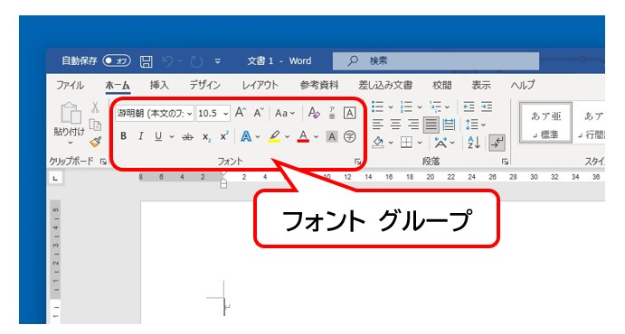
▲ [ホーム]タブの左側に、文字を装飾する機能が並んでいます
フォント（書体）の選び方
フォントとは「文字の形（デザイン）」のことです。ビジネスでは誠実な印象を与える「MS 明朝」や、視認性の高い「MS ゴシック」が一般的です。最近では、より現代的で読みやすさに配慮された「游明朝」や「游ゴシック」も標準として広く使われています。1つの文書内で使うフォントを絞ることで、品格のある落ち着いた資料に仕上がります。
フォントサイズ（大きさ）の使い分け
文字の大きさの単位は「pt（ポイント）」です。一般的なビジネス文書の本文は「10.5pt」から「12pt」が標準です。見出しを本文より数ポイント大きくすることで、情報の優先順位が読み手に直感的に伝わるようになります。サイズを極端に変えすぎないのが、洗練された文書のコツです。
フォントの色と強調表現
基本は「自動（黒）」を使用します。色を使う場合は、重要な結論や注意喚起の場所に限定しましょう。多くの色を使いすぎると、どこが重要なのかがぼやけてしまい、かえって読み手の負担を増やしてしまいます。また、下線（アンダーライン）や太字（ボールド）も、色の変更と同じく「ここぞ」という場所で効果的に使いましょう。
「この見出しの設定を、別の場所にも全く同じに適用したい」という時に便利なのが、刷毛（はけ）のマークの「書式のコピー/貼り付け」です。範囲選択をしてからこのボタンを押し、適用したい場所をなぞるだけで、設定を一瞬でコピーできます。 また、設定が思い通りにいかず、一旦リセットしたい場合は、文字の「A」に消しゴムがついた「すべての書式のクリア」を使いましょう。真っさらな標準状態からやり直すのが、最も早い解決策になることも多いですよ。
編集記号を表示して文書の裏側を見る
Wordで「思い通りにレイアウトが決まらない」最大の原因は、画面に見えないスペースや改行が隠れていることです。まずは [ホーム] タブにある「編集記号の表示/非表示」ボタンを常にONにする習慣をつけましょう。
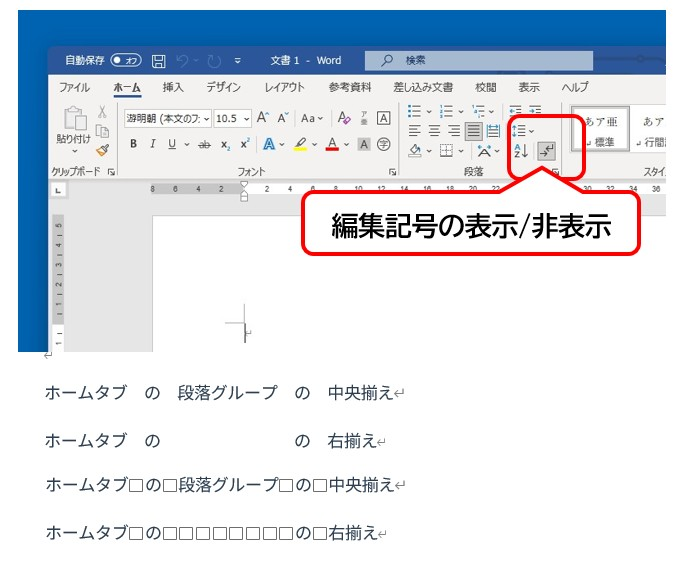
▲ 段落記号（↵）が見えることで、文書の構造が手に取るようにわかります
ONにすると、改行は「↵」、スペースは「□」という記号で表示されます。普段は見えないこれらを視覚化することで、「位置合わせのためにスペースを連打していないか」「不要な空行が混じっていないか」といった、レイアウト崩れの原因を瞬時に特定できるようになります。
見出しスタイルで文書の構造を作る
初心者の多くは、見出しを「文字を大きくして太字にする」といった個別の装飾で作りますが、実務では [ホーム] タブの「スタイル」機能の中にある「見出し1」「見出し2」を適用することが推奨されます。
スタイルを使う理由は、単なる見た目だけではありません。Wordに「ここが情報の切り替わりです」と教えることで、後から自動で目次を作成したり、文書全体のデザインを一瞬で切り替えたりすることが可能になります。一貫性のあるプロの書類を作るための第一歩です。
段落設定と行間で読みやすさを整える
Wordにおいて「段落」とは、段落記号（↵）から次の段落記号までの一区切りを指します。この段落に対して設定を行うのが「段落の設定」です。読み手が疲れにくい文書にするためには、文字の間隔を適切に管理する必要があります。
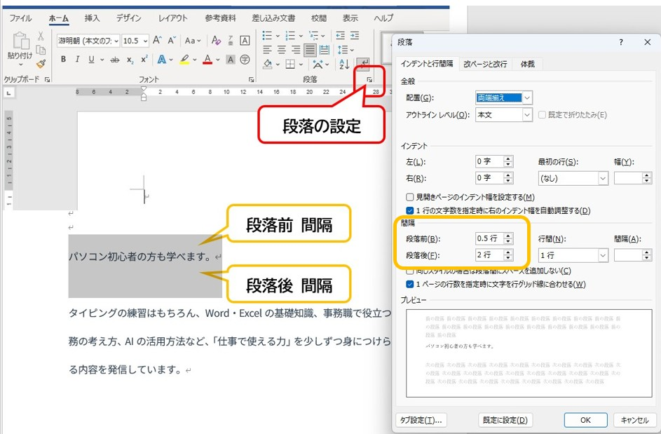
▲ 段落設定画面。数値で余白を管理するのがプロの手法です
特によく使うのが「行間」と「段落前後の間隔」です。見出しの前に少し広めの余白を設ける際、Enter キーを何度も叩いて空行を作っていませんか？ 空の改行による調整は、後から文章を書き足した際にレイアウトがガタガタに崩れる原因となります。必ず「段落の設定」から数値で余白を指定しましょう。
4種類のインデントを使い分ける
文字の開始位置や終了位置をずらす機能を「インデント」と呼びます。スペースキーでの位置合わせを卒業し、Wordのポテンシャルを引き出すための最重要機能です。
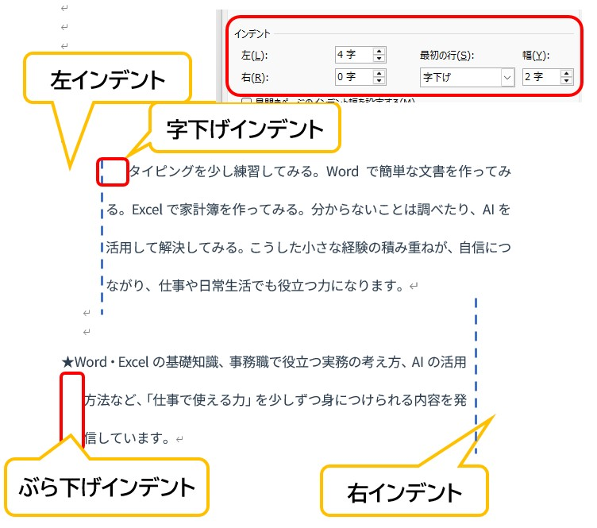
▲ 4つのインデントを使いこなすと、どんな複雑なレイアウトも崩れなくなります
- 1行目インデント： 段落の最初の1文字目だけを右にずらします。日本語の文章作法である「字下げ」を自動化します。
- ぶら下げインデント： 2行目以降の開始位置を右にずらします。「・」や「※」などの行頭記号を使った箇条書きの際、2行目が記号の下に回り込むのを防ぎ、文頭をきれいに揃えることができます。
- 左インデント： 段落全体の左端を内側に押し込みます。引用文や補足説明を一段落下げて見せたい時に有効です。
- 右インデント： 段落全体の右端を内側に押し込みます。右側に図を配置するスペースを空けたい時などに使用します。
画面の上部に表示されている定規のような「ルーラー」にある、砂時計のような形をした小さなマークを動かすことで、これらのインデントを視覚的に調整できます。 「ここからここまでは、このルールで表示する」という範囲（段落）の境界線を意識することが、Word上達の最大の秘訣です。
箇条書きと段落番号を正しく使う
複数の項目を並べる際、手入力で「・」や「1.」と打っていませんか？ Wordの「箇条書き」や「段落番号」の機能を使うことで、行が長くなって2行目に折り返した時も、文字の開始位置（インデント）が自動で美しく揃います。
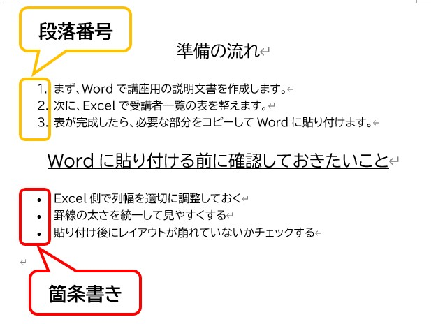
▲ ボタンひとつで、2行目以降もきれいに整列した読みやすいリストになります
段落番号を使えば、途中に項目を足したり消したりしても、番号が自動的に振り直されます。手作業で数字を書き換える手間がなくなるため、資料作成のミスを大幅に減らすことができます。
情報を整理して見せる表の作成術
スケジュール表や比較表など、複雑な情報を整理する際に「表」は欠かせない機能です。[挿入] タブの「表」ボタンから作成しますが、まずは表を構成する3つの要素の名前を正確に覚えましょう。ここがズレていると、実務での指示が正しく理解できません。
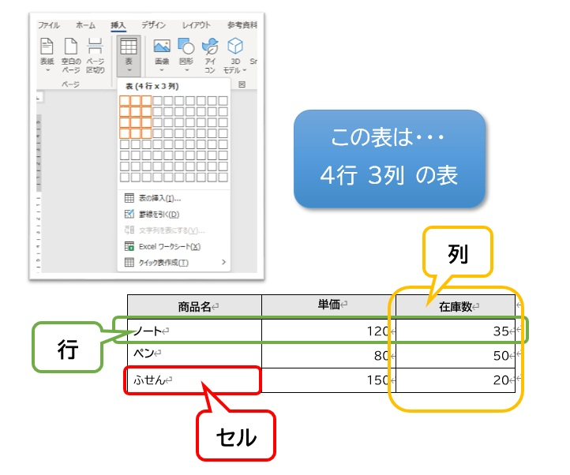
▲ 表の基本：横の並びが「行」、縦の並びが「列」、1つの箱が「セル」です
- セル： 表の中にある、文字を入力する1つ1つのマス目のことです。
- 行（ぎょう）： セルが「横」に並んだひとかたまりです。
- 列（れつ）： セルが「縦」に並んだひとかたまりです。
セルの調整で見栄えを整える
表を挿入した後は、[レイアウト] や [テーブルデザイン] という専用のタブを使って形を整えます。特に実務で評価されるのが、以下の細かな気配りです。
- セルの結合： 隣り合う複数のセルを1つにまとめ、大きな見出しエリアなどを作ります。複数のセルを選択して、右クリックやタブメニューから設定します。
- 均等割付： 「氏名」と「電話番号」のように文字数が異なる項目でも、見た目の横幅をピッタリ揃えることができる機能です。文字がスカスカにならず、清潔感のある表に仕上がります。
- セルの配置： セルの中の文字を「上下左右のどこに寄せるか」を設定します。特にお勧めなのは「上下中央揃え」です。文字の上下に均等な余白が生まれ、非常に読みやすくなります。
画像が自由に動かない問題を解決する
Wordに画像を挿入した直後、「マウスで動かそうとしても動かない」「文字がバラバラに散らばってしまった」という経験はありませんか？ これはWordが、挿入された画像を「巨大な1文字」として扱おうとするために起こる現象です。
画像を自由自在に配置するには、「レイアウトオプション」の設定を切り替える必要があります。
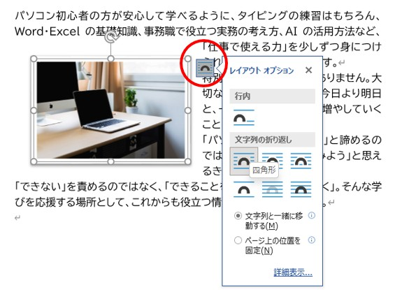
▲ 画像右上のマークから、文字との重なり具合を自由に変更できます
- 四角形： 画像の周りを文字が四角く囲むように配置されます。説明文の横に図を置く時に最適です。
- 前面： 文字の上に画像が浮き上がります。どこへでも自由にドラッグできるようになるため、微調整が最も簡単です。初心者の方は、まずこの「前面」に設定して動かすことから慣れていきましょう。
- 背面： 文字の後ろに画像を置きます。透かし文字や、背景のデザインとして活用します。
最新のWordでは、プロが作成したような「アイコン」素材をインターネット経由で取り込んで使用できます。また、「SmartArt（スマートアート）」を使えば、箇条書きの文字を入れるだけで、組織図や手順図といった複雑な図解を一瞬で生成できます。 文字だけの文書に、これらの視覚情報を少し添えるだけで、あなたの資料の説得力は格段に高まります。
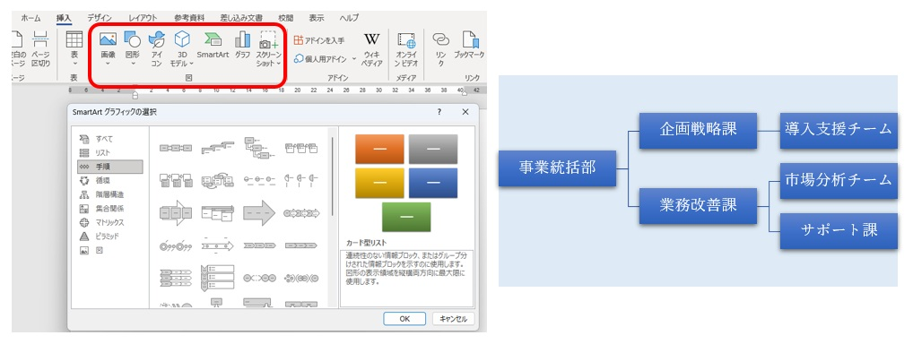
▲ 複雑な手順も、SmartArtを使えば美しく図解化できます
ヘッダー・フッターとページ番号の役割
複数ページにわたる書類では、ページ番号の挿入は欠かせません。これらは本文とは独立した「ヘッダー（上部）」や「フッター（下部）」という特別なエリアで管理します。
「社外秘」の文字を全ページの右上に表示させたり、ページ下部の中央に「- 1 -」のような番号を自動で入れたりすることが可能です。本文をどれだけ書き換えても情報の位置がズレないため、管理の行き届いたプロの印象を与えます。
改ページで文書の構造を正しく保つ
「次のページから新しい章を始めたい」という時、Enter キーを連打して無理やりページを送っていませんか？ この方法は避けたほうがよいでしょう。前のページに1行書き足しただけで、後ろのページの文章がすべて数行ずつ下に押し出され、レイアウトが崩れてしまうからです。
ページを変えたい時は、必ず Ctrl + Enter キーを押してください。これで「ここから先は次のページから開始する」という明確な区切りが入ります。前のページの編集内容に左右されない、安定した文書管理が可能になります。
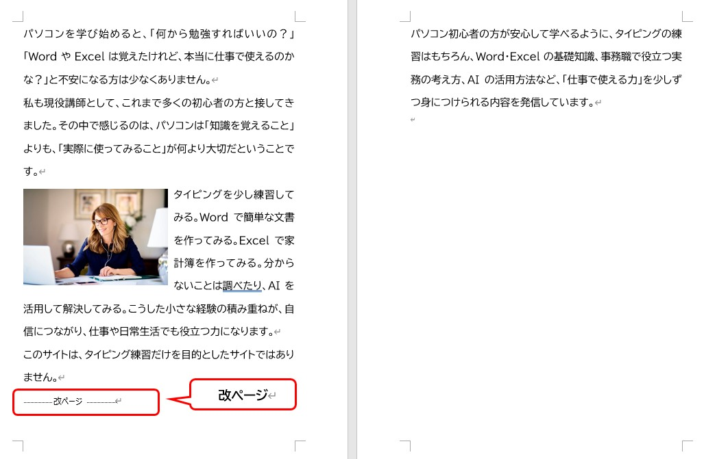
▲ 改ページ機能を使うと、編集記号として「改ページ」の文字が表示されます
検索と置換による効率的な一括修正
大量の資料の中から特定の単語を探し出したり、すべての「株式会社A」を「株式会社B」へ変更したりする場合、手作業では時間がかかるだけでなく、見落としの恐れもあります。
こうした場面では、Ctrl + H キーで開く「置換」の機能が活躍します。一瞬ですべての文字を書き換えることができ、事務作業の正確性とスピードを支える重要なテクニックとなります。
データの保存ルールと拡張子の知識
作成中のデータが突然のトラブルで消えてしまわないよう、作業の区切りごとに保存を行う習慣をつけましょう。保存する際は、後から見ても内容が分かるよう「日付_宛先_用件」といったルールでファイル名を付けることをお勧めします。
20260627_株式会社○○様_お見積書.docx
拡張子「.docx」と古い形式への注意
現在のWordで保存すると、ファイル名の末尾に「.docx」という拡張子が付きます。これは最新の標準形式です。稀に「.doc」という古い形式のファイルを見かけることがありますが、これは20年以上前の古いWordの形式です。古い形式（.doc）のまま保存を続けると、最新のWordの便利な機能が使えなくなったり、表示が崩れたりする場合があるため、基本的には「.docx」で保存するよう意識しましょう。
また、完成した書類をメール等で送信する際は、「PDF形式」でのエクスポートを検討してください。PDFには「相手の環境に左右されずレイアウトが崩れない」「情報の改変を防げる」という大きなメリットがあるため、ビジネスでのやり取りに最適です。
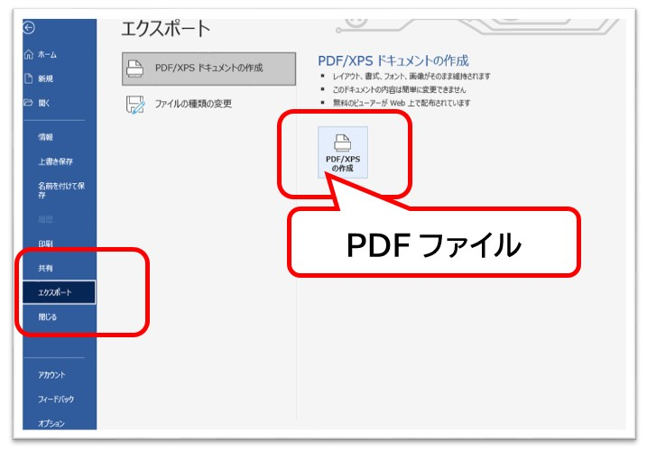
▲ [名前を付けて保存] の種類からPDFを選択して書き出します
実務でよく見られる「もったいない失敗」と対策
講習の現場でよく目にする、上達を妨げてしまう惜しい失敗例と、その解決策をまとめました。これらを意識するだけで、あなたのPCスキルへの信頼度は格段に向上します。
- 思い通りにいかない時に無理に修正する：
設定を変えてみて「思った動きと違う」と感じたら、手作業で直そうとせず、すぐに Ctrl + Z を押して時間を戻しましょう。混乱を最小限に抑えるのが上達のコツです。 - 文章の段落を理解せず改行を使ってしまう：
Wordは「段落記号から段落記号まで」を一つの塊（段落）として認識します。無理な改行で形を作ろうとせず、4種類のインデント機能を活用して、段落全体の形を整えるようにしましょう。 - 文章が用紙1枚に収まらない：
あと数行だけ入れたいという時は、[レイアウト] タブにある「ページ設定」を確認してください。文字数と行数の設定を微調整することで、文字を小さくしすぎることなく、美しく1枚に収めることができます。
Word学習のまとめ
Wordは単に「文字を並べるソフト」ではなく、「読み手が迷わない、機能的で美しい文書を設計するためのツール」です。初心者のうちは、以下のステップを大切にしてみてください。
- 設定は最初に行う（用紙・余白）
- 正確な操作は「範囲選択」から始まる
- 段落設定とインデントで「崩れない構造」を作る
- 相手に届ける形（PDF）を常に意識する
焦ってすべてを覚える必要はありません。まずは毎日少しずつタッチタイピングを練習し、Wordで何か一つ「自分のための資料」を形にしてみることから始めてみましょう。その一歩が、就職後の大きな自信と信頼に繋がります。